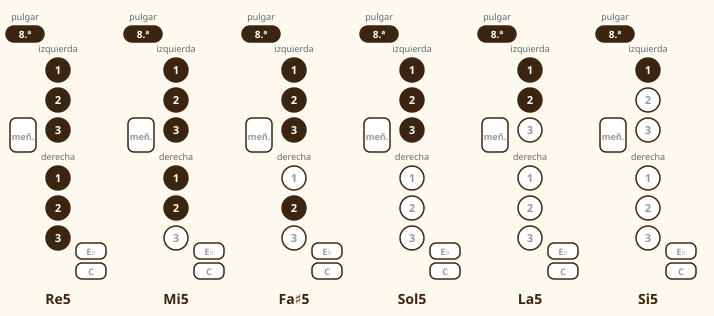
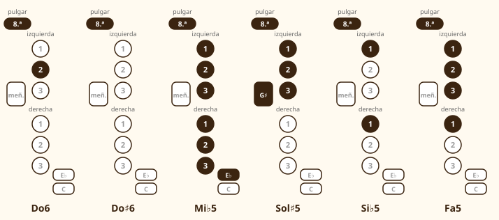

Módulo 8: El registro agudo y la llave de octava
La misma digitación, una octava más aguda: cómo y cuándo usar la llave de octava.
La llave de octava (la pulsa el pulgar izquierdo) abre un orificio que hace que la misma digitación suene una octava más aguda. Tocas Re agudo con los mismos seis dedos que el Re grave, pero con el pulgar levantado hacia la llave.
Más arriba
1. Qué hace la llave de octava
En el saxo, todas las notas a partir del Re5 repiten la digitación de la octava inferior, añadiendo la llave de octava. Eso reduce mucho lo que hay que memorizar: si sabes tocar Re, Mi, Fa, Sol, La y Si en el registro grave, ya sabes sus equivalentes agudas.
Hay una única excepción en la parte baja del registro agudo: el Do (Do5) y el Do♯ (Do♯5) pertenecen todavía al registro grave. Su versión aguda (Do6 y Do♯6) es la misma digitación con la llave de octava.
2. Cómo se usa
- El pulgar izquierdo hace de «bisagra».💡 Cómo se hace: descansa sobre la placa del pulgar y, para pulsar la llave de octava, rueda ligeramente hacia arriba sin levantarse del todo.
- Pulsa con suavidad.💡 Cómo se hace: no necesitas presionar con fuerza; basta un movimiento breve y preciso.
- Mantén la boca igual.💡 Cómo se hace: la embocadura no cambia: la llave de octava hace el trabajo. Lo que sí hay que hacer es dar un poco más de velocidad al aire.
- Piensa la nota antes de tocarla.💡 Cómo se hace: canta mentalmente la nota aguda antes de emitirla: ayuda a la garganta a colocarse.
3. Las notas agudas


| Nota aguda | Digitación | Equivale a… |
|---|---|---|
| Re5 | Seis dedos + octava | Re4 + octava |
| Mi5 | Izq 1-2-3, der 1-2 + octava | Mi4 + octava |
| Fa5 / Fa♯5 | Como Fa4 / Fa♯4 + octava | Con la derecha 1 o 2 |
| Sol5 | Izq 1-2-3 + octava | Sol4 + octava |
| La5 | Izq 1-2 + octava | La4 + octava |
| Si5 | Izq 1 + octava | Si4 + octava |
| Do6 | Izq 2 + octava | Do5 + octava |
| Do♯6 | Todo levantado + octava | Do♯5 + octava |
4. Practicar el cambio de registro
🎼 La llave de octava: la misma nota una octava más aguda
Con la llave de octava, la misma digitación suena una octava más aguda. Mantén la boca igual: la llave hace el trabajo.
🎼 Escala de Sol mayor, una octava
Los Fa son Fa♯. Del Do al Re cambia el registro: el Re se toca con la llave de octava.
🗓️ Ejercicio de octavas (5 minutos)
- Una nota, dos registros: toca Sol largo y luego Sol agudo, sin cambiar la boca; solo la llave y un poco más de aire.
- Octavas ligadas: Sol–sol–Sol–sol con una sola lengua, a ♩ = 60.
- Escala de Sol mayor de la partitura, despacio, comprobando el paso del Do al Re.
- Después del Re, sigue subiendo: Mi, Fa♯, Sol… y para en la que ya no suena limpia.
5. Melodías con el registro agudo
🎼 Estrellita, ¿dónde estás? (Twinkle, Twinkle)
Melodía tradicional (dominio público). El salto de Sol a Re es una quinta: prepara la llave de octava.
🎼 Himno de la alegría (L. van Beethoven)
Tema de la Novena sinfonía (1824, dominio público), transportado a Sol mayor escrito. El ritmo de la corchea con puntillo se cuenta «1-2-3-y».
⚠️ Errores frecuentes y cómo corregirlos
| Lo que pasa | Por qué | Cómo corregirlo |
|---|---|---|
| La nota aguda no suena y salta al grave | Falta aire o la llave no está pulsada | Pulsa la llave a tiempo y da más velocidad al aire |
| Las notas agudas suenan altas y chillonas | Muerdo para que salgan | Relaja la mordida: la llave de octava hace el cambio |
| Me cuesta el paso Do–Re | Cambio de registro | Practica ese paso lento, con la nota larga antes y después |
| La nota sube o baja de afinación | Cambio la presión de los labios | Mantén la misma embocadura en todo el registro |